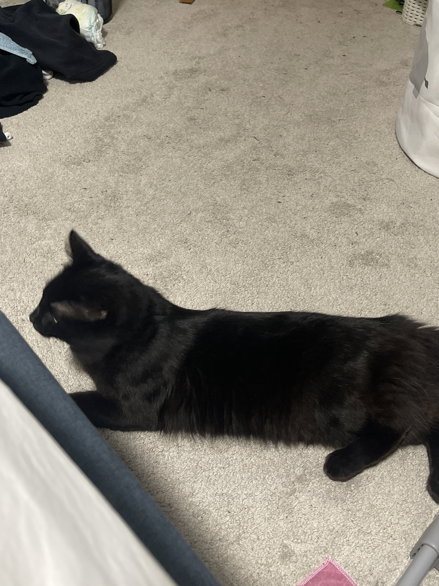

Cats are independent creatures and may not always show affection in
the same way that dogs or other pets do. However, there are a few
things you can do to build a strong bond with your cat and increase
the chances of them showing you affection.
- Respect your cat's space and boundaries: Cats need their own space and time to themselves, so it's important to respect their boundaries. Don't force your cat to interact with you when they don't want to.
- Create a comfortable environment: Make sure your cat has a comfortable space to call their own. This can be a cozy bed, a perch near a window, or a scratching post. Providing your cat with their own space can make them feel more secure and relaxed.
- Provide regular playtime: Cats love to play, and providing them with regular playtime can help them release their energy and reduce stress. Use interactive toys such as feathers or laser pointers to engage your cat in playtime.
- Offer treats and rewards: Treats and rewards can be a great way to reinforce positive behavior in cats. Give your cat treats when they show affection, come when called, or use their scratching post instead of your furniture.
- Communicate with your cat: Cats communicate in their own ways, so it's important to learn their body language and vocalizations. Pay attention to your cat's purring, meows, and tail movements to understand how they're feeling.
- Be patient: Building a strong bond with your cat takes time and patience. Don't force interactions or expect immediate results. Show your cat love and affection consistently over time, and they may begin to reciprocate that love back to you.
Remember, every cat is unique, so what works for one cat may not work
for another. Be patient and attentive to your cat's needs, and with
time and effort, your cat may begin to show you love and affection in
their own way.

-
Cats are one of the most popular pets in the world: According to the American Veterinary Medical Association, there are approximately 94 million pet cats in the United States alone. They are also popular in many other countries, making them one of the most widely kept companion animals in the world.
-
Cats are natural hunters: Domestic cats have retained their innate hunting instincts from their wild ancestors, and many still love to stalk and pounce on small prey. Even if a cat is well-fed and has no need to hunt for food, they may still exhibit these behaviors as a form of play or exercise.
-
Cats can sleep for up to 16 hours a day: While cats are known for being active and playful at times, they also have a reputation for being avid nappers. In fact, it's not uncommon for a cat to sleep for up to 16 hours a day! This is because they conserve energy when they're not hunting or playing, and they're able to quickly become alert and active when they need to.